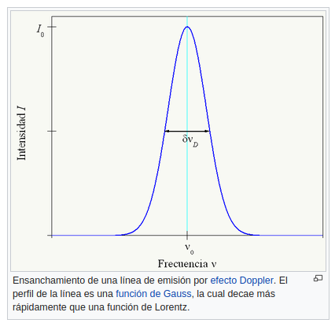
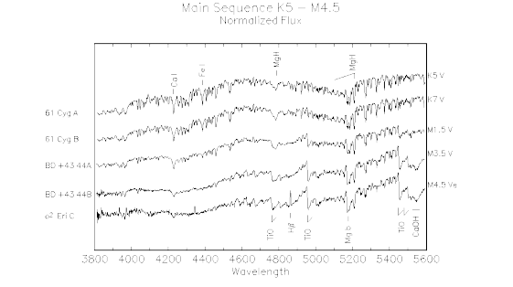
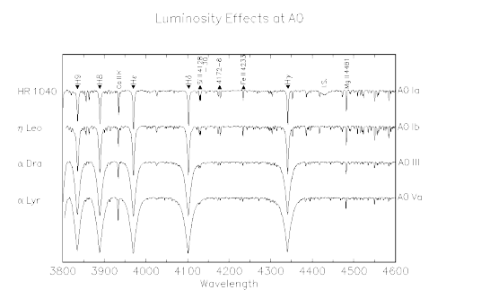
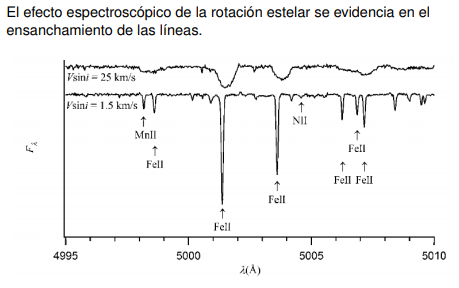
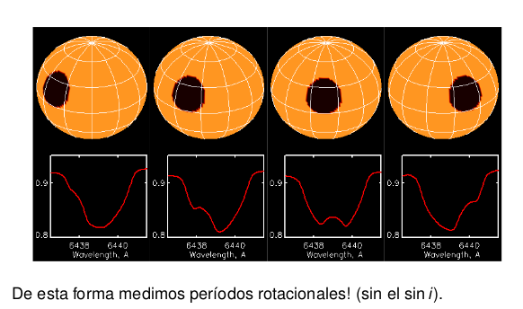

Espectroscopia por Paloma Díaz
El objeto de estudio de la espectroscopia es el espectro de la radiación electromagnética que emana de las estrellas y de otros objetos celestes. La comparación detallada entre los espectros de líneas teóricas y los espectros observados son una poderosa herramienta de diagnóstico que se puede utilizar para comprender mejor las propiedades que poseen las estrellas y galaxias más lejanas. Pero también hay que tener en cuenta los factores que afectan el flujo que recibimos, además de la distancia, podemos mencionar: el medio interestelar, la atmósfera terrestre y el sistema observacional que estemos usando.
Para comenzar vamos a hablar de material interestelar (MIE). Las primeras evidencias de la "materia" esparcida vienen a través de la espectroscopia en el siglo 20, mediante observaciones de líneas de absorción de estrellas binarias espectroscópicas. Luego, se observan en otras estrellas tempranas y brillantes, lo que permitió notar que la intensidad de esas líneas correlacionan con la distancia.
Los espectrógrafos de alta resolución permiten diferenciar las componentes en cada línea interestelar. El MIE ya no era tan homogéneo. Notamos las "nubes" del medio interestelar, nebulosas brillantes, nebulosas planetarias, remanentes de supernova. Hay que tener en cuenta que las estrellas masivas modifican el MIE, tanto su forma como el estado de ionización. Las estrellas se forman del MIE y las estrellas masivas vuelven a dejar en el medio material enriquecido donde nacerán más estrellas.
Las líneas estelares pueden cambiar su aspecto por diferentes razones.
Causas intrínsecas
- El ancho natural, es una causa intrínseca. Estos anchos son mucho menores a los que se encuentran normalmente en objetos astronómicos cuyas líneas espectrales han sido ensanchadas por otros factores. Los anchos de línea también pueden proporcionar información sobre las condiciones físicas en las regiones de formación de líneas. Por ejemplo, dos estrellas con el mismo tipo espectral pero en diferentes etapas de la evolución se pueden distinguir con la ayuda de sus anchos de línea observados. Una enana blanca, que tiene una densidad mucho mayor en su superficie que una estrella gigante roja, tiene líneas atómicas más anchas debido al mecanismo de ampliación de presión. Entender mejor los mecanismos de ensanchamiento de líneas espectrales es esencial para extraer la mayor cantidad de información posible de los espectros estelares observados.
- El ensanchamiento natural. Los electrones en los átomos ocupan un estado de energía bien definido. Sin embargo la energía de cada estado no puede determinarse con una precisión infinita. La vida media de un electrón en un estado (es decir, el tiempo típico que tarda en abandonar ese estado y pasar a otro) está relacionada con la energía del propio estado mediante el principio de incertidumbre de Heisenberg. Este principio indica que no podemos conocer a la vez, y con precisión infinita, el tiempo de vida en un estado y la energía de este. Ambas incertidumbres se relacionan entre sí mediante la expresión ∆E ∆t ≥ h donde h es la constante de Plank. Por tanto, los niveles de energía en los átomos tienen cierta anchura, por lo que la diferencia entre dos niveles no es un valor exacto, sino un intervalo alrededor de la diferencia de las energías medias. Fotones con energías en ese intervalo pueden ser absorbidos y contribuir a la formación de la línea. El ensanchamiento natural es un fenómeno físico fundamental que afecta a todas las transiciones en cualquier situación física, y por tanto nos da información acerca de los parámetros físicos de la atmósfera estelar en que la línea se forma.
- Otro ejemplo de causa intrínseca es el Efecto Doppler (distribución de velocidad). La velocidad a la que las partículas se mueven depende de la temperatura del gas. Sin embargo, las partículas tendrán diferentes velocidades. Cuando el gas se encuentra en equilibrio termodinámico, el número de partículas que poseen una cierta velocidad se puede conocer haciendo uso de la estadística de Maxwell-Boltzmann. A partir de ésta, se puede llegar a la distribución de Maxwell-Boltzmann, que nos relaciona la fracción f de átomos con un cierto intervalo infinitesimal de velocidades y la temperatura del gas. Al igual que en el caso del desplazamiento Doppler, una partícula que se acerca o se aleja del observador emitirá una línea espectral con menor o mayor longitud de onda, respectivamente, a la predicha por la teoría. Debido a que el desplazamiento Doppler depende directamente de la velocidad, las partículas del gas emitirán líneas espectrales siguiendo una distribución de longitudes de onda similar a la distribución de Maxwell-Boltzmann. Esta última es una distribución gaussiana. Debido a que los anchos de las líneas dependen directamente de la temperatura del gas que lo produce, éstos pueden tomar un amplio rango de valores. Como la velocidad del movimiento de los átomos debida a la agitación térmica depende de la temperatura, el ensanchamiento Doppler es un indicador de la temperatura efectiva. Por eso se llama también ensanchamiento térmico. Utilizando el efecto Doppler puedo estudiar las velocidades radiales , puedo ver si la longitud de onda se corre al rojo o se corre al azul. Lo que necesito en el espectro es una línea de absorción o de emisión para ver donde debería estar. Por ejemplo, la velocidad radial nos sirve para determinar si estamos estudiando un sistema binario ya que según el período va a pronunciarse más la velocidad radial. Para esto necesito que el sistema binario no esté en el plano del cielo ya que necesito la componente radial en la velocidad.

- El Efecto Zeeman (campos magnéticos). El campo magnético de una estrella puede ser medido por medio del efecto Zeeman. Normalmente los átomos en la atmósfera de una estrella absorben ciertas frecuencias o longitudes de onda en el espectro electromagnético, produciendo líneas oscuras de absorción dentro del espectro de la estrella. Cuando los átomos se encuentran dentro de un campo magnético, estas líneas de absorción se dividen en múltiples líneas separadas por un pequeño espacio. Adicionalmente, la energía se polariza con una orientación que depende de la orientación del campo magnético. Por lo tanto, la fuerza y la dirección del campo magnético de las estrellas pueden ser determinados examinando las líneas del efecto Zeeman.
- Bandas moleculares. Cuando el átomo que absorbe un fotón forma parte de una molécula, sus niveles de energía están siempre perturbados con respecto a los de un átomo aislado de la misma especie, y esa perturbación es muy variable debido a los diferentes estados en que se puede encontrar la molécula. De esta forma, el rango de energías del fotón que puede ser absorbido es mucho más grande, y la línea mucho más ancha. Debido a su ancho, a las líneas formadas por transiciones de átomos en moléculas se les denomina “bandas espectrales”. Su presencia en el espectro revela la existencia de especies moleculares en la atmósfera estelar. En la siguiente imagen, vemos el espectro de estrellas frías, mostrando las bandas moleculares TiO, MgH, CaOH.

- También se puede estudiar el ensanchamiento colisional o por presión. Se debe al efecto de otras partículas. Se consideran los potenciales de los otros elementos en la Ecuación de Schrodinger. Puede darse el caso de que el átomo que va a absorber un fotón no esté aislado, sino que en el momento de la absorción tenga otro átomo muy cerca, con el que esté colisionando. En el momento de la colisión, los niveles del átomo que absorbe son perturbados por la presencia del átomo cercano, y su energía se modifica. La transición del átomo perturbado tiene una energía diferente a la del átomo en reposo, y por eso es capaz de absorber fotones cuya energía sea diferente a la diferencia de los niveles propios del átomo en reposo. El ensanchamiento colisional depende de la velocidad a la que se mueven los átomos, y por tanto de la temperatura. También depende de la densidad de la atmósfera, a mayor densidad mayor probabilidad de colisión. Se da la circunstancia de que las estrellas gigantes y supergigantes tienen atmósferas muy extensas, y por tanto muy tenues, mientras que las estrellas de la secuencia principal tienen atmósferas densas. En estas últimas las líneas son anchas y profundas, debido al ensanchamiento colisional, mientras que en las primeras son mucho más estrechas. Está íntimamente ligado a la gravedad superficial, esto ayuda a clasificar las estrellas. No solo cambia lo ancho, cambia las intensidades de algunos metales y esto nos da información sobre las clases de luminosidad de las estrellas. En la siguiente imagen podemos notar el efecto de la luminosidad en la anchura de las líneas, en estrellas de la misma temperatura. La luminosidad aumenta hacia arriba en la gráfica.

- Abundancias químicas. Como hemos visto, el ancho y profundidad de las líneas depende principalmente de la temperatura y la luminosidad de la estrella. Para estrellas de igual temperatura y luminosidad, las diferencias en ancho equivalente de las líneas metálicas –recordemos que en astrofísica metal es todo aquello que no es hidrógeno ni helio- está relacionada con la abundancia de dicho metal. Por tanto, a partir del espectro de líneas podemos conocer la abundancia relativa de metales en la estrella, determinando previamente la temperatura y la luminosidad. En los espectros estelares, no siempre los elementos son “visibles” (He en las estrellas frías) y entonces no es posible medirlos. Para los metales se suele usar el Fe, que si bien no es el más abundante de los metales, suele estar presente en muchos tipos espectrales. Actualmente, el cálculo de abundancias se realiza a partir de ajustar el espectro observado con espectros “teóricos” (espectros sintéticos). Los análisis estelares muestran que las estrellas se pueden agrupar según sus metalicidades en: Población I y II (III).
Causas extrínsecas
- Turbulencias. Como por ejemplo movimiento turbulento por convección del gas.
- Rotación estelar. Todas las estrellas rotan, se forman del colapso de una nube de gas y polvo. Esta nube tiene turbulencias y tiene un momento angular distinto a cero. Al colapsar la nube, se conserva el momento angular. Más pequeña la nube, más colapsada, mayor es la velocidad de rotación. Al rotar la estrella vemos que la velocidad es mayor en los bordes y voy a ver como se acerca de un lado y se aleja de otro. Por efecto Doppler vemos como cambia la longitud de onda. Veo una línea muy ancha a causa del ensanchamiento rotacional. Es el efecto neto de la rotación. Cuando medimos “rotaciones” a partir de las líneas espectrales, estas medidas están acopladas a la inclinación i del eje de rotación. Medimos (v . sen(i)).

- Hay distintas técnicas espectroscópicas para determinar la rotación, como por ejemplo la calibración a partir del FWHM, Se miden los FWHM de líneas espectrales de estrellas estándares.
- Otra técnica es la correlación: Se correlaciona el espectro a medir con un espectro “patrón” de baja rotación. El ancho de la función de correlación se relaciona con la rotación.
- También tenemos como técnica la síntesis espectral: Se calculan modelos teóricos (espectros sintéticos) para un gran número de combinaciones de diferentes parámetros, incluyendo la rotación. Similar a su uso en “abundancias”.
- Por último, la Transformada de Fourier: Se calcula la transformada (discreta) de Fourier del perfil de la línea. Las raíces de la transformada se relacionan con la velocidad de rotación (Simón-Díaz & Herrero, 2007, A&A, 468, 1063).
- Las líneas que encontramos en los espectros se forman a lo largo de todo el hemisferio visible de la estrella. Cuando una estrella tiene una alta velocidad de rotación, la contribución a la línea que se forma en el limbo que se acerca al observador aparece corrida al azul por efecto Doppler. La que se forma en el hemisferio que se aleja, aparece corrida al rojo. Como esto varía gradualmente a lo largo de todo el hemisferio visible, el efecto es que las líneas se ensanchan debido a la rotación estelar. El área entre la línea y el contínuo, caracterizada por la anchura equivalente, no varía, pues la energía que la línea resta al continuo se mantiene constante. Por lo tanto, el efecto de la rotación es ensanchar la línea y disminuir su profundidad.
- Otras técnicas “espectroscópicas” para determinar la rotación: Podemos medir rotaciones analizando cómo son afectadas las líneas espectrales por “inhomogeneidades” en la superficie estelar. Como se representa en la imagen a continuación.

- Vientos estelares. Las estrellas normales tienen fotosfera que está aproximadamente en equilibrio hidrostático, es decir la fuerza gravitatoria es igual a la presión del gas y de radiación, si la de radiación es pequeña, entonces la presión del gas iguala aproximadamente la atracción gravitatoria. Las partículas no escapan. Si la presión de radiación es grande, hay una presión ejercida por los fotones, la fuerza aceleradora va hacia afuera y hay un flujo de partículas al que llamamos viento estelar. Los fotones aceleran las partículas hacia afuera. Si los fotones son más energéticos hay mayor presión de radiación y mayor temperatura, por lo tanto en las estrellas calientes es importante el viento estelar. El viento estelar es material altamente ionizado por la radiación estelar fluyendo a altas velocidades en dirección radial. Al ser un flujo de partículas, hay una pérdida de masa. La taza de pérdida de masa da cuenta de la intensidad del viento.
REFERENCIAS
Apuntes de la teoría de Astronomía Estelar.
http://fcaglp.fcaglp.unlp.edu.ar/~egiorgi/ag/Apuntes/espectros2.pdf
http://astronomiaestelarlp.pbworks.com/w/file/fetch/107881109/unidad08.pdf
http://astronomiaestelarlp.pbworks.com/w/file/fetch/107977820/unidad09.pdf
https://es.wikipedia.org/wiki/L%C3%ADnea_espectral
https://www.uv.es/fabregaj/apuntes/aoi.pdf
https://ui.adsabs.harvard.edu/#abs/2007A&A...468.1063S/abstract